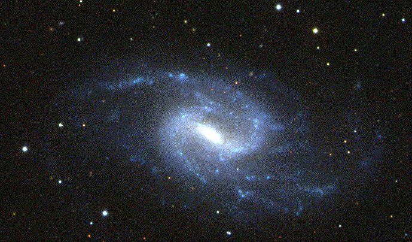

Image of the Week

NGC 3359 is a spiral galaxy with an open spiral pattern. The strong blue color indicates that vigorous star formation is still occurring in the galaxy. (Picture caption by Stephen Kent and Mark Schaffer).
Object Information from NED:Object: NGC 3359
Type: Spiral Galaxy
Constellation: Ursa Major
Longitude: 161.652917
Latitude: 63.224167
RA:10:46:36.70
Dec: +63 degrees 13:27.0
(J2000 Equatorial)
Distance: 15 Mpc
Radial Velocity: 1014 km/s
Redshift: 0.003382
Diameters: 7.2 x 4.4
Magnitude: 11.03
Classifications: SB(rs)c
About SDSS |
Q and A |
Image Gallery |
Tour the Project |
Contact Us |
News |
Credits
Documents | Survey Status | Data Products
Management | Collaboration | Survey Ops | Publications
Other Links
Documents | Survey Status | Data Products
Management | Collaboration | Survey Ops | Publications
Other Links
This site was last updated on 14 November 2001.